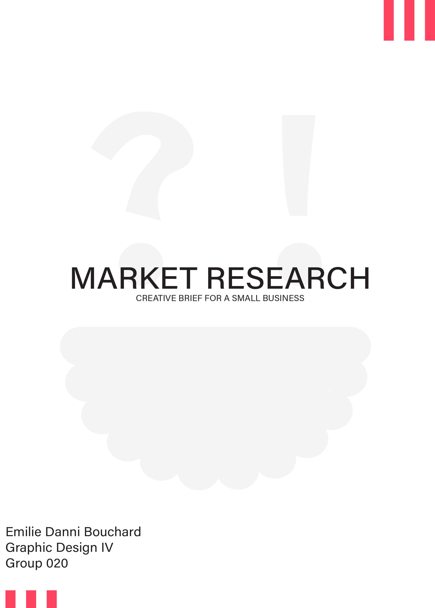
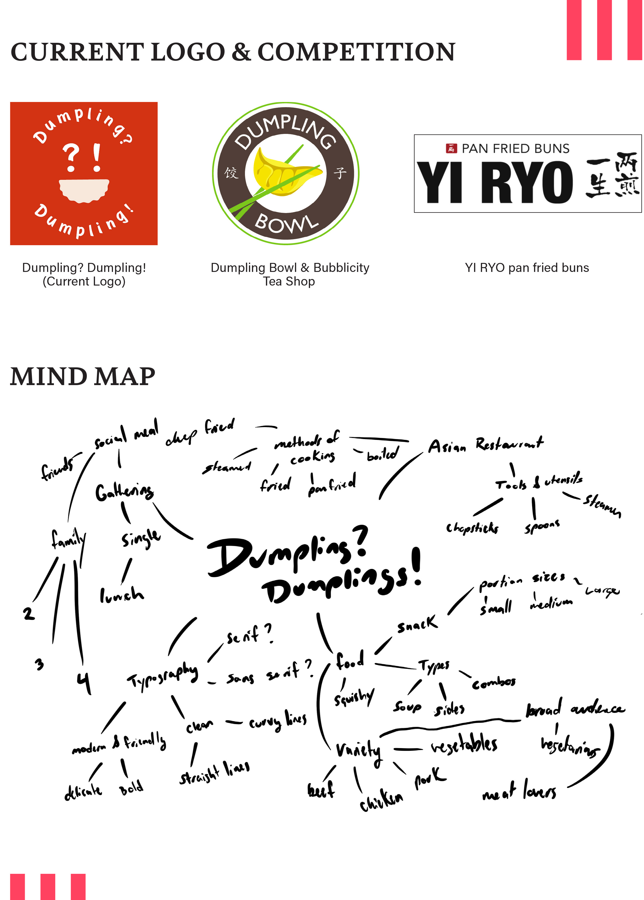
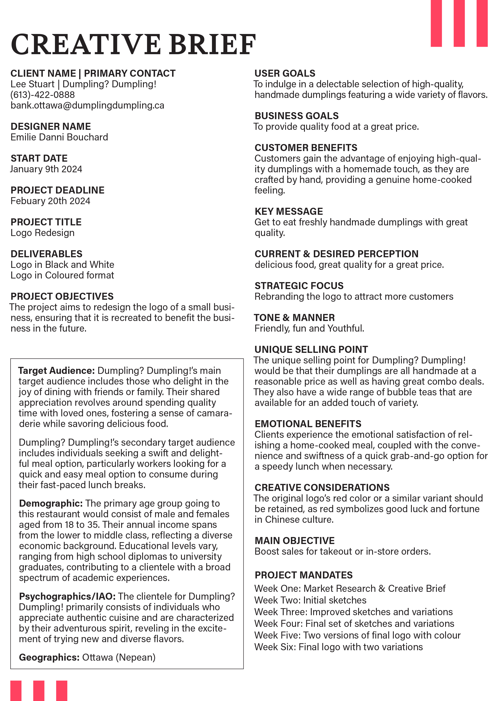
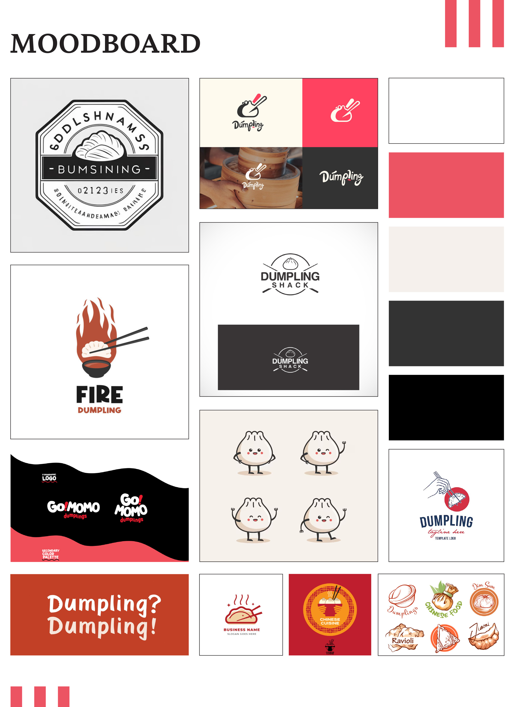
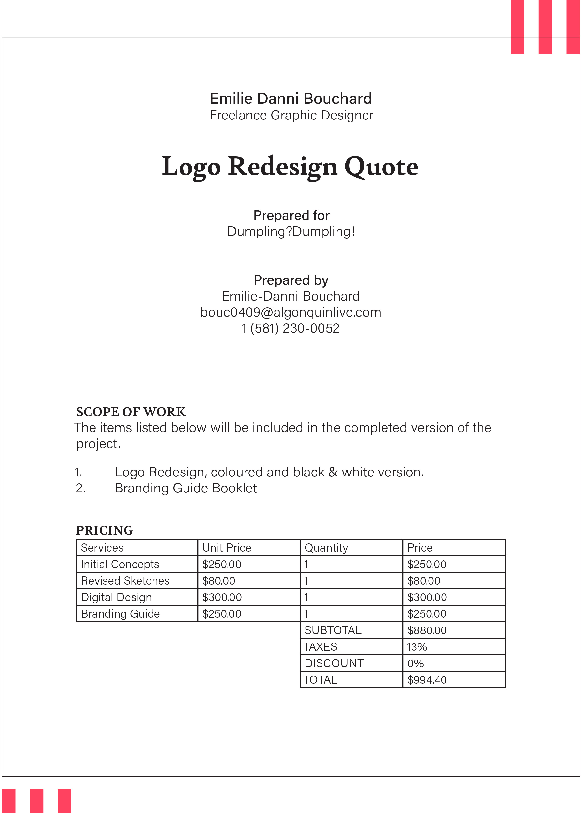
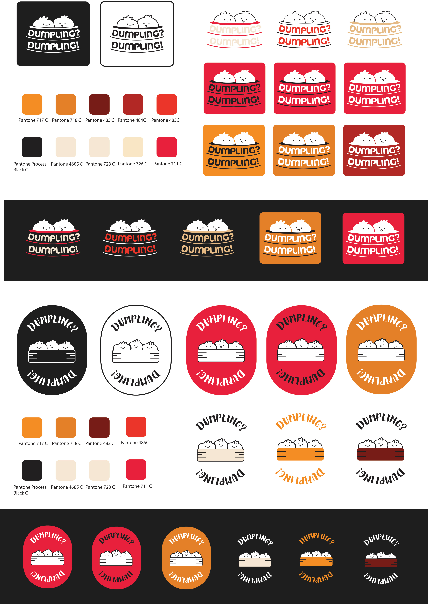
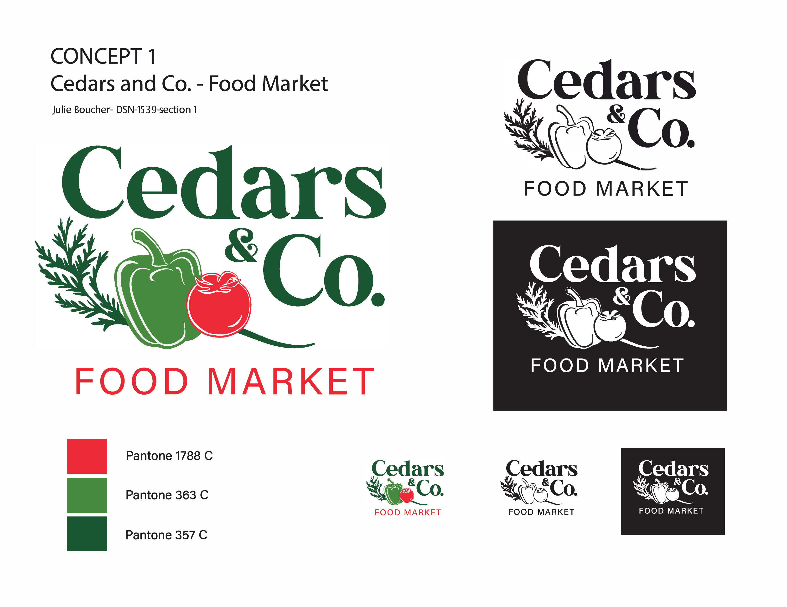
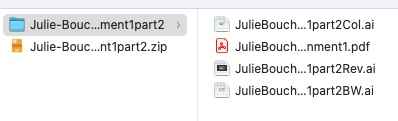

8 submission folders. 85 points in total.
Submission folders
- LOGO DESIGN - RESEARCH & CREATIVE BRIEF & MOOD BOARD + QUOTE
- LOGO DESIGN - FIRST ROUND OF SKETCHES
- LOGO DESIGN -SECOND ROUND OF SKETCHES
- LOGO DESIGN -GOING DIGITAL
- LOGO DESIGN - FINAL ROUND - DIGITAL COLOUR - TWO CONCEPTS
- LOGO PRESENTATION - TWO CONCEPTS
- Assignment 1 Part 1 - FINAL TWO CONCEPTS
- Assignment 1 Part 2 - FINAL LOGO SUBMISSION
Related modules
- WEEK 1 - Assignment 1- Part 1 - Logo Re-design
- Sketching Partners
- WEEK 2 - REVIEW BRIEF - First Round of Sketches Due Week 3
- Week 2 Presentation Slide Show
- WEEK 3 - REVIEW FIRST ROUND OF SKETCHES - Second round of sketches due week 4
- WEEK 4 - GOING DIGITAL - Due Week 5
- WEEK 5 - DIGITAL COLOUR
- Convert Pantone Process Colour to Spot Colour
- WEEK 6- PREPARING FOR PRESENTATION
- WEEK/Module 7-Assignment1 Part 1 Presentation - Assignment 1Part 2 Final Submission
LOGO DESIGN - RESEARCH & CREATIVE BRIEF & MOOD BOARD + QUOTE
- Points
- 3
- Due date in Winter 2025
- January 14, 2025
Due Week 2
Submit ONE PDF file of all exercises to Brightspace on the due date before start of class.
Upload pdf file to RESEARCH & CREATIVE BRIEF
1) Shots of their present logo(s)
2) Determine user and business goals
3) Creative brief - Number responses 1- 22 (include competitors logo).
4) Mind map
5) Mood board (based on the information from client or your research) 6) Quote
RESEARCH - Creative Brief
Do your research - this initial groundwork will help you gain ideas about the client and its industry. The more research you do the better foundation you have to build your concept.
Creative Brief - Answer these questions:
Determine and Write out:
1) User Goals
2) Business Goals
- Client name -Company name(Contact person's name, phone number and email address. For this project it will the owner. You do not have to find out their name. Make one up.):
- Primary contact:
- Project title:
- Designer name (For this project it will be YOUR name.):
- Start date (For this project it will be the start date of this project. WEEK 1 ):
- Project deadline (For this project use the project deadline. WEEK 7):
- Project objectives (What is the objective of the creative?):
- Company insight (This is information that you would not be able to obtain from internet research.): You will not be able to answers this question, but you should ask your client this.
- Target audience:
a) Primary and secondary target audience / Key market (Industry):
b) Demographics: This is the study of age, gender, income, education level and employment status...etc.
c) Psychographics / IAO (interests.activities.opinions): Is the study of personality, values, attitudes, interests, opinions and lifestyles...etc.
d) Geographics: Their location and where are their clients located? - Deliverables (Tangible or intangible result of the project that is intended to be delivered to a customer. A deliverable could be a brochure, a logo, or a building of an overall project.):
- Customer benefits (What benefit would the customer get by this product or service?.):
- Competition - List of competitors (Primary & Secondary):
- Key message (For this project, it will be a message that the company wants to communicate about their product or service. Example Tide - gets white whiter. Look at is your slogan or tagline.):
- Current/desired perception (How is the client's product or service presently perceived? How does the client want their product or service to be perceived?):
- Strategic focus (Is a marketing strategy in which a company focuses its resources on entering or expanding in a narrow market or industry segment.):
- Tone & manner (Tone & Manner of a brand — a range of nature, values, and personality of the brand):
- Project mandates (The preliminary report to outline the parameters of the project. This allows the client to know every detail that will be taken during the execution of a project. For this project use your due dates and think you will complete them by that time.):
- What is there a unique selling point of product or service (unique selling point / USP - For this project, it will be something that the product or service brings to the table that their competition does not.):
- What is the emotional benefit (For this project, think about what emotion they get from the product or service. Example: prestige, increased social status, so confidence.):
- Creative considerations (Limitations, factors or items that must be addressed, things to be taken into consideration when designing. Example you need to use a certain colour or image. The list can go on.):
- Determine from the client where they what to see themselves in the future. What is their strategic plan for the company/product or service?
- What is the objective of your job that you have been hired to do? What action are they trying to achieve? Example: more downloads, increase membership base, Increased traffic, or more sales.





Rubric: Week 1
| Criterion | Not fully complete | Below Industry Standards | Industry Standards - Everything complete | WOW Factor - Beyond Industry Standards |
|---|---|---|---|---|
| Design Brief, mind mapping, moodboard, pdf presentation. | 0.5 points | 1 points | 2 points | 3 points |
LOGO DESIGN - FIRST ROUND OF SKETCHES
- Points
- 3
- Due date in Winter 2025
- January 21, 2025
DUE WEEK 3 - 1st round of sketches
Due at the beginning of class. Pencil/Pen sketches on paper only, No digital - Labeled Week 3
30 numbered sketches - as per presentation example
1) Milestones checked.
2) You will discuss designs with your sketch partner.
3) Prof and sketching partners meet as a creative team and we will eliminate the weak.
4) You will begin flushing out your new sketches on paper.
Rubric: Week 2
| Criterion | Not fully complete | Below Industry Standards | Industry Standards - Everything complete | WOW Factor - Beyond Industry Standards |
|---|---|---|---|---|
| First Round of Sketches | 0.5 points | 1 points | 2 points | 3 points |
LOGO DESIGN -SECOND ROUND OF SKETCHES
- Points
- 3
- Due date in Winter 2025
- January 28, 2025
Due Week 4 - SECOND ROUND OF SKETCHES
Submit ONE PDF file of all exercises to Brightspace on the due date.
2nd round of sketches
Pencil sketches on paper only, No digital
30 numbered sketches - as per example
- These sketches are going to be variations of two designs that you feel strongly about.
- No colour or type at this point.
- Once you have nailed down the concept for symbol/graphic then we will discover colour and type solutions.
-
You will be marked by showing the progression and development of both of your selected concepts.
Rubric: Week 3
| Criterion | Not fully complete | Below Industry Standards | Industry Standards - Everything complete | WOW Factor - Beyond Industry Standards |
|---|---|---|---|---|
| Second Round of Sketches | 0.5 points | 1 points | 2 points | 3 points |
LOGO DESIGN -GOING DIGITAL
- Points
- 3
- Due date in Winter 2025
- February 4, 2025
Due Week 5
Submit ONE PDF file of all exercises to Brightspace on the due date BEFORE START OF CLASS.
Going digital
- We have chosen which two to move forward with and you will begin building in Illustrator.
- No colour at this point - Black and white only
- Some of you might have the type in place and some may not.
If possible, you should be showing many variations of type choices and positions. - You will be marked by showing the progression and development of both of your selected concepts.
-
STUDENT SAMPLE
Image not in the export: epstein-maya-DSN1539-020-week4 1.jpgImage not in the export: epstein-maya-DSN1539-020-week4 2.jpg
Image not in the export: Bouchard-EmilieDanni-dsn1539-020-week4 1.jpg
Image not in the export: Bouchard-EmilieDanni-dsn1539-020-week4 2.jpg
Rubric: Week 4
| Criterion | Not fully complete | Below Industry Standards | Industry Standards - Everything complete | WOW Factor - Beyond Industry Standards |
|---|---|---|---|---|
| Third Round of Sketches | 0.5 points | 1 points | 2 points | 3 points |
LOGO DESIGN - FINAL ROUND - DIGITAL COLOUR - TWO CONCEPTS
- Points
- 3
- Due date in Winter 2025
- February 11, 2025
Due Week 6
Submit ONE PDF file of all exercises to Brightspace on the due date also at this point you should have a print out of the logos to actually view them on paper as per samples of printouts shown in class.
4th Final round - digital and colour
1) Show your final two distinctly different versions of the logo.
2) Computer-generated images/type in position. You may have decided on type placement or you may be still deciding on fonts and placement.
3) You should be showing MULTIPLE COLOUR variations. YOU HAVE TO IDENTIFY PANONTE SOLID C COLOURS BEING USED. (some of the student samples may not show that but you have to)
4) You should have a BW, COLOUR and BW REVERSE and also show colour versions reversed out of black or coloured background to check construction at this stage.



Rubric: Week 5
| Criterion | Not fully complete | Below Industry Standards | Industry Standards - Everything complete | WOW Factor - Beyond Industry Standards |
|---|---|---|---|---|
| Colour version - two distinct designs + BW + reverse | 0.5 points | 1 points | 2 points | 3 points |
LOGO PRESENTATION - TWO CONCEPTS
- Points
- 5
- Due date in Winter 2025
- February 18, 2025
PRESENTATION 1
Two final comps for presentation submission
SUBMISSION Final presentation Instructions
Digital-PDF submission (11x8.5)
1) Page 1 - Title page (Includes original logo)
2) Page 2 - Sales Pitch outlining how the direction satisfies business and user goals.
3) Page 3 - Logo sheets of Option 1 as per layout example below
(Colour, 1/2 BW & Reversed, reduced to 1")
4) Page 4 - Logo sheets of Option 2 as per layout example below
(Colour, 1/2 BW & Reversed, reduced to 1")
5) Page 5 - ONE timesheet
Example of Logo Sheet Layout (pages 3&4) submission:
LayoutExample.pdf
LayoutExample2.pdf
You will present mockups in a professional manner to the class.
Please view pdf for a sample of the layout. CRITERIA
You have to have two distinctive logos to present.
You will be showing both versions in colour, back & white and reverse.
You have to show reductions in both colour and BW (1" width x 1" height).
If you have a third design that you want to present you can do so.
Rubric: Week 6 - Presentation
| Criterion | Description | Points |
|---|---|---|
| Presentation | 5 |
Assignment 1 Part 1 - FINAL TWO CONCEPTS
- Points
- 15
- Due date in Winter 2025
- February 19, 2025
FINAL SUBMISSION FOR BOTH CONCEPTS AFTER PRESENTATION
2PDF FILES AS PER SAMPLE SHOWN HERE - SUBMIT FILES TO Assignment 1 Part 1 - FINAL TWO CONCEPTS


Rubric: Assignment 1 - Part 1 - Week 7
| Criterion | Nothing met | Not meeting requirements | Not ReachedIndustryStandards | Industry Standards | Above. IndustryStandards | WOW- Beyond |
|---|---|---|---|---|---|---|
| WOW Creative Factor | 0 points | 1 points | 2 points | 3 points | 4 points | 5 points |
| Criterion | Nothing met | Not meeting requirements | Not ReachedIndustryStandards | Industry Standards | Above. IndustryStandards | WOW- Beyond |
|---|---|---|---|---|---|---|
| Construction | 0 points | 0.5 points | 1 points | 1.5 points | 2 points | 2.5 points |
| Criterion | Nothing met | Not meeting requirements | Not ReachedIndustryStandards | Industry Standards | Above. IndustryStandards | WOW- Beyond |
|---|---|---|---|---|---|---|
| All other elements - including but not limited to: Typography, Use of Colour, Form, Spelling, Meeting business/user goals, followed file set up, followed instructions. | 0 points | 0.5 points | 1 points | 1.5 points | 2 points | 2.5 points |
| Criterion | Description | Points |
|---|---|---|
| New Criterion | 5 |
Assignment 1 Part 2 - FINAL LOGO SUBMISSION
- Points
- 50
- Due date in Winter 2025
- February 21, 2025
Assignment 1 - Part 2
20% - Final Logo Submission
After your presentation and peer feedback. Your final logo digital file (the one you would select to present to the client) will be submitted through this assignment via Brightspace.
Your AI file should be set up properly:
1) All fonts created to outline.
2) All artwork is final - all paths are closed.
3) 2 or 3 colours only for the colour version, must be PMS/Spot colours, NO Process/CMYK colours.
4) The files should be constructed as discussed in class.
5) Do not use drop shadows.
6) The file should not contain any other artwork, but the logo.
7) Do not use any gradients
8) If two different objects are touching and they are the same colour then they should be part of the same path. I would always keep a copy of the working file (fonts not created to outline, objects not join) for your records for future alterations.
9) Tinting PMS/Spot colour (using a percentage of that colour) can be unpredictable and hard to know what the tint/% will look like (unless you have a colour tint book from Pantone) when printed, so do not to use them for this assignment, as discussed. This is true for some colours more than others - they tend to be more problematic (brown, golds, yellows, reds).
10) For BW logo - No greyscale only black and white
11) Reverse version set up properly as indicated above. Show on black background only. Logo and type are completely white
Submission Requirements (FINAL LOGO ONLY) along with final docket sheet with original quote filled in at the bottom and total $ for completed job.
Image not in the export: image_20250218135202814.png
Digital Submission: (submitted via Brightspace)
All logo versions in their own Illustrator ai file:
1) 1 ai file of Colour logo in the center of page (11x8.5)
2) 1 ai file BW logo in the center of page (11x8.5)
3) 1 ai file Reverse logo in the center of page (11x8.5)
4) Original logo, new logo (col, rev, bw) on the same page. This is a pdf not an ai file. (11x8.5)
5) PDF of your final quote sheet with total cost $ and also include your initial quote in the quote box at the bottom
Labelled:
1) Example: DavidBromley - 020 - assignment1part2Col.ai
2) Example: DavidBromley - 020 - assignment1part2BW.ai
3) Example: DavidBromley - 020 - assignment1part2Rev.ai
4) Example: DavidBromley - 020 - assignment1.pdf
5) Example: DavidBromley - 020 - assignment1_docketsheet.pdf
All files are to be put in a folder (Your FULL name) and compressed.
NOTE THESE FILES NEED TO BE SINGLE FILES - Your folder should look like this (note: docket sheet is missing in this example

Rubric: Assignment 1 Part 2 - Final Submission
| Criterion | Description | Points |
|---|---|---|
| Design | Does the design have overall impact-image/type? Creative factor - Wow 5, Very Strong 4, Very good 3, ok 2, not at all 0 | 5 |
| Construction | Is the construction of the symbol up to design standards that have been discussed in class? This includes but is not limited to items discussed in class, but all includes creative factor - Excellent 3, Strong 2, ok 1, not at all 0 | 3 |
| Client | Does the design reflect the company/client image? Strong 2, ok 1, not at all 0 | 2 |
| Visibility | Is the design clear and concise? Strong 2, ok 1, not at all 0 | 2 |
| Fonts | Choice works well with design, Kearning, leading if applicable, anything related to type. Creative factor - Strong 2, ok 1, not at all 0 | 2 |
| Black and White | Does the logo reproduce well in black and white? Pantone Black or 100%K.. Strong 2, ok 1, not at all 0 | 2 |
| Reduction | Will the design reduce well and retain its value? | 3 |
| Files | Has b/w, colour and reverse working files been submitted and labeled properly? Required pdf has also been supplied as per sample | 3 |
| Colour | Has the colour version been created as per specifications? 1/2 or 3 colour(s), no strokes, no drop shadows or gradients. | 5 |
| Black and White working file | Has the black and white version been created as per specifications? No drop shadows or gradients, anything related to the building of the file. | 5 |
| Colour working file | Proper Pantone Solid C swatch(s) have been indicated for spot colours and file has not CMYK or RGB colours, anything related to the building of the file. | 5 |
| Reverse Version | Has the reverse version been created as per specifications? | 5 |
| Submission | Assignment handed in on time with all required pieces | 5 |
| Final Docket Sheet | Docket sheet is filled out - time etc totalled + original quote on docket sheet | 3 |